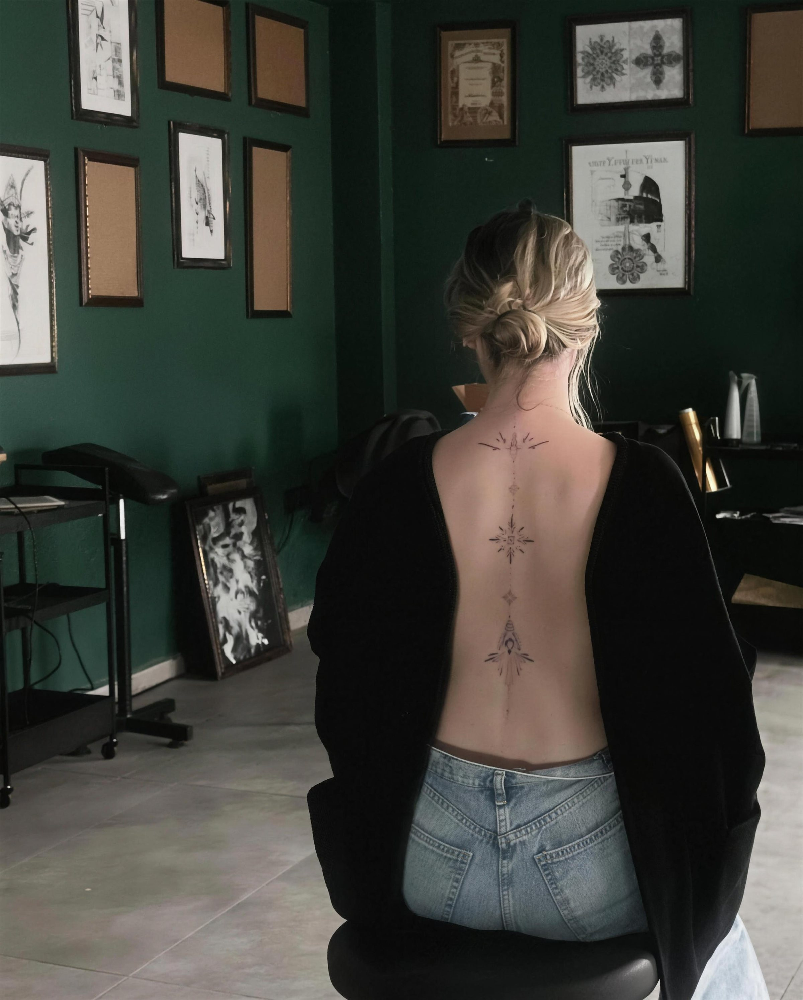
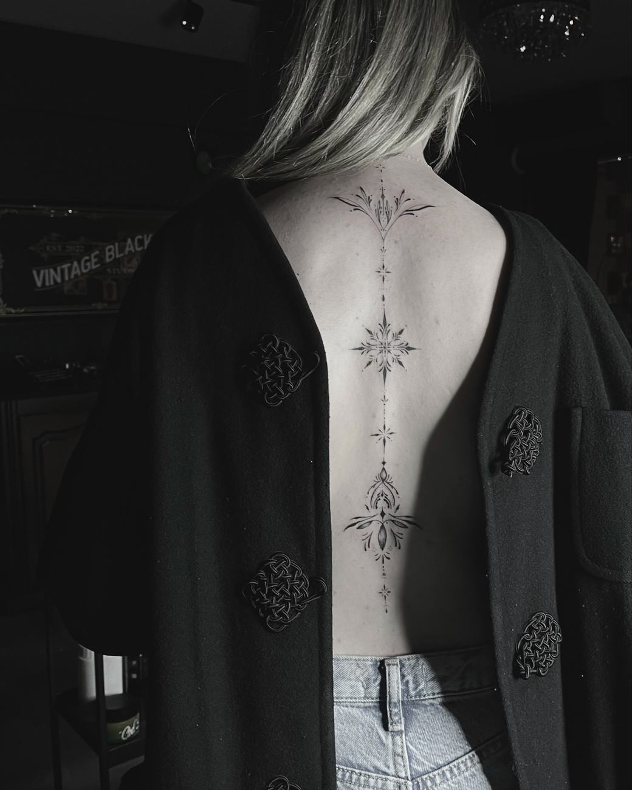

VINTAGE BLACK


STÜDYO(01) HAKKINDA

Vintage Black Studio
Vintage Black Studio, 2022'de kurulan bir dövme stüdyosu. Ağırlık siyah mürekkepte: iri ve akışkan blackwork parçalar, omurga boyunca inen ince ornamental işler, fırça darbesi ve noktalama ile kurulan brush & dot çalışmalar.
Tek kişilik bir stüdyo: ilk eskizden son çizgiye kadar her iş aynı elden çıkar. Her tasarım, taşıyacağı bedene göre çizilir. Kalçadan dize uzanan bir çizgi, sırtı kaplayan simetrik bir desen ya da kolun kıvrımını izleyen bir fırça izi; desen bedenin hareketini takip eder. Bazı işlerde tasarım doğrudan ten üzerine fırçayla çizilerek başlar.
Stüdyo Bursa, Nilüfer'de: 29 Ekim Mahallesi, Muammer Aksoy Caddesi No: 83, Time Özlüce Binası.
Dövme yaptırmak mı istiyorsun?Yaz ve randevunu oluştur
SEÇME(02) İŞLER
Stüdyodan çıkan işlerden bir seçki. Kategoriye dokun, tamamını gör.
İLETİŞİM(03)
Aklında bir dövme mi var? Birlikte tasarlayalım.
- I
Sen
Adın, yaşın, yaşadığın şehir ve varsa Instagram profilin.
- II
Fikrin
Konseptini, dövmeyi istediğin bölgeyi ve yaklaşık boyutu anlat. Fikrinin arkasındaki anlamı ya da ilhamı da paylaşabilirsin.
- III
Referanslar
Aklındakini anlatmaya yardımcı olacak referans görselleri, eskizleri, dokuları ya da metinleri ekle.
- IV
Uygunluk
Tercih ettiğin tarihleri yaz. İstanbul ya da Bursa'ya mı geleceğini, yoksa başka bir şehirde misafir seans mı düşündüğünü belirt.
- V
Süreç
Her talep tek tek incelenir. Fikrin stüdyonun işleriyle örtüşüyorsa tasarım, fiyat ve uygun tarihler e-posta üzerinden konuşulur.
- VI
Kapora ve onay
Detaylarda anlaşıldıktan sonra randevuyu kesinleştirmek için iadesiz bir kapora alınır. Kalan tutar seans günü ödenir.
Randevu, fiyat ve tasarım soruları için yaz:
- @vintageblackstudio
- E-posta
- miraulgul@gmail.com
- Adres
- Time Özlüce Binası, 29 Ekim Mah., Muammer Aksoy Cd. No: 83, Nilüfer / Bursa
